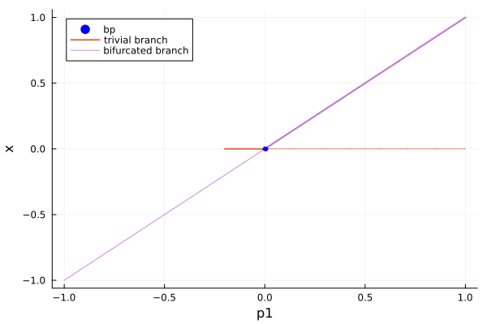
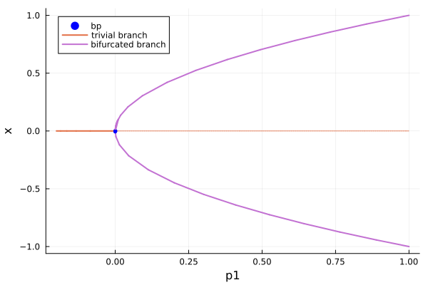
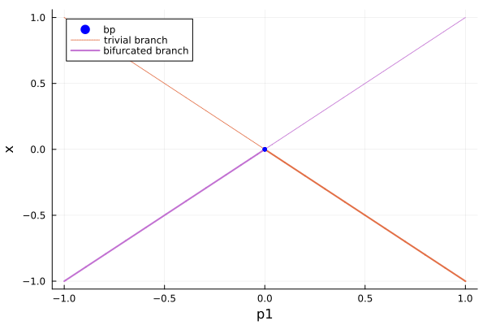
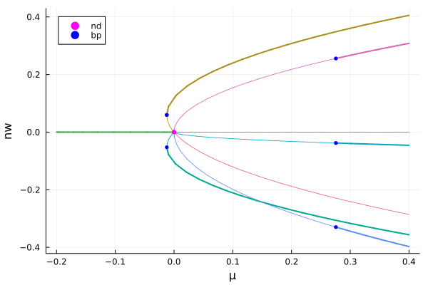
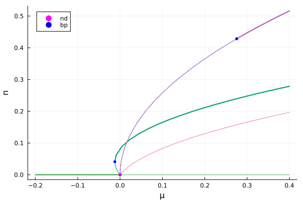

From equilibria to equilibria
From simple branch point to equilibria
See Branch switching (branch point) for the precise method definition.
You can perform automatic branch switching by calling continuation with the following options:
continuation(br::AbstractResult{Tkind, Tprob}, ind_bif::Int, options_cont::ContinuationPar = br.contparams; δp = nothing, ampfactor::Real = 1, use_normal_form = true, usedeflation::Bool = false, kwargs...)where br is a branch computed after a call to continuation with detection of bifurcation points enabled. This call computes the branch bifurcating from the ind_bif-th bifurcation point in br. An example of use is provided in 2d Bratu–Gelfand problem.
Algorithm
- the normal form is computed and non-trivial zeros are used to produce guesses for points on the bifurcated branch.
Simple example: transcritical bifurcation
using BifurcationKit, Plots# vector field of transcritical bifurcationF(x, p) = [x[1] * (p[1] - x[1])]# parameters of the vector fieldpar = [-0.2]# problem (with automatic differentiation)prob = ODEBifProblem(F, [0.], par, 1; record_from_solution = (x, p; k...) -> x[1])# compute branch of trivial equilibria and detect a bifurcation pointbr = continuation(prob, PALC(), ContinuationPar())# perform branch switching on both sides of the bifurcation pointbr1 = continuation(br, 1; bothside = true )scene = plot(br, br1; branchlabel = ["trivial branch", "bifurcated branch"], legend = :topleft)
Simple example: pitchfork bifurcation
using BifurcationKit, Plots# vector field of pitchfork bifurcationF(x, p) = [x[1] * (p[1] - x[1]^2)]# parameters of the vector fieldpar = [-0.2]# problem (with automatic differentiation)prob = ODEBifProblem(F, [0.], par, 1; record_from_solution = (x, p; k...) -> x[1])# compute branch of trivial equilibria and# detect a bifurcation point with improved precisionbr = continuation(prob, PALC(), ContinuationPar(n_inversion = 6))# perform branch switching on both sides of the bifurcation pointbr1 = continuation(br, 1; bothside = true )scene = plot(br, br1; branchlabel = ["trivial branch", "bifurcated branch"], legend = :topleft)
Simple example: quadratic parameter dependency
In the previous examples, we need to have $O(p)$ dependency on the parameter $p$. If this is not the case, BifurcationKit can handle $O(p^2)$ dependency on the parameter $p$ although this is not generic. For higher order degeneracy, the user needs to provide the predictor him/herself.
using BifurcationKit, Plots# vector field with degenerate transcritical bifurcationFdegenerate(x, p) = [x[1]^2 - p[1]^2]# parameters of the vector fieldpar = [-1.0]# problem (with automatic differentiation)prob = ODEBifProblem(Fdegenerate, [1.], par, 1; record_from_solution = (x, p; k...)->x[1])# compute branch of trivial equilibriabr = continuation(prob, PALC(), ContinuationPar(n_inversion = 6); normC = norminf)# perform branch switching on both sides of the bifurcation pointbr1 = continuation(br, 1, bothside = true)scene = plot(br, br1; branchlabel = ["trivial branch", "bifurcated branch"], legend = :topleft)
Just for comparison, we can compute the reduced equation
bp = get_normal_form(br, 1)BranchPoint bifurcation point at p1 ≈ -2.8189256484623115e-17
Normal form (a01⋅δp1 + a02⋅δp1²/2 + b10⋅x⋅δp1 + b20⋅x²/2 + b30⋅x³/6)
┌─ a01 = 5.637851296924623e-17
├─ a02 = -2.0
├─ b11 = 0.0
├─ b20 = 2.0
└─ b30 = 0.0
From non simple branch point to equilibria
We provide an automatic branch switching method. The method is to first compute the reduced equation (see Non-simple branch point) and its zeros. These zeros are then seeded as initial guess for continuation. Hence, you can perform automatic branch switching by calling continuation with the following options:
continuation(br::AbstractResult{Tkind, Tprob}, ind_bif::Int, options_cont::ContinuationPar = br.contparams; δp = nothing, ampfactor::Real = 1, kwargs...)Examples
An example of use is provided in 2d Bratu–Gelfand problem. A much simpler example is given now. It is a bit artificial because the vector field is its own normal form at the bifurcation point located at 0.
using BifurcationKit, Plots, LinearAlgebrafunction FbpD6(x, p) return [p.μ * x[1] + p.a * x[2] * x[3] - p.b * x[1]^3 - p.c*(x[2]^2 + x[3]^2) * x[1], p.μ * x[2] + p.a * x[1] * x[3] - p.b * x[2]^3 - p.c*(x[3]^2 + x[1]^2) * x[2], p.μ * x[3] + p.a * x[1] * x[2] - p.b * x[3]^3 - p.c*(x[2]^2 + x[1]^2) * x[3]]end# model parameterspard6 = (μ = -0.2, a = 0.6, b = 1.5, c = 2.9)# problemconst w = rand(3)prob = ODEBifProblem(FbpD6, zeros(3), pard6, (@optic _.μ); record_from_solution = (x, p; k...) -> (n = norminf(x), nw = dot(w , x)))# continuation optionsopts_br = ContinuationPar(dsmin = 0.001, dsmax = 0.02, ds = 0.001, # parameter interval p_max = 0.4, p_min = -0.2, newton_options = NewtonPar(tol = 1e-10, max_iterations = 20), max_steps = 1000, n_inversion = 8)br = continuation(prob, PALC(), opts_br) ┌─ Curve type: EquilibriumCont
├─ Number of points: 29
├─ Type of vectors: Vector{Float64}
├─ Parameter μ starts at -0.2, ends at 0.4
├─ Algo: PALC [Secant]
└─ Special points:
- # 1, nd at μ ≈ +0.00000281 ∈ (-0.00000065, +0.00000281), |δp|=3e-06, [converged], δ = ( 3, 0), step = 13
- # 2, endpoint at μ ≈ +0.40000000, step = 28
You can now branch from the nd point
br2 = continuation(br, 1, opts_br; δp = 0.01)plot(br, br2..., vars = (:param, :n))For a better visualization, we can use the vector w defined above.
plot(br, br2..., vars = (:param, :nw))
Assisted branching from non-simple bifurcation point
It may happen that the general procedure fails. We thus expose the procedure multicontinuation in order to let the user tune it to its need.
The first step is to compute the reduced equation, say of the first bifurcation point in br.
bp = get_normal_form(br, 1)3-d (non simple) bifurcation point at μ ≈ 2.8052431305863613e-6.
Kernel dimension = 3
Normal form:
+ 1.0 * x1⋅δμ + 0.6⋅x2⋅x3 - 1.5⋅x1³ - 2.9001⋅x2²⋅x1 - 2.9001⋅x3²⋅x1
+ 1.0 * x2⋅δμ + 0.6⋅x1⋅x3 - 2.9001⋅x1²⋅x2 - 1.5⋅x2³ - 2.9001⋅x3²⋅x2
+ 1.0 * x3⋅δμ + 0.6⋅x1⋅x2 - 2.9001⋅x1²⋅x3 - 2.9001⋅x2²⋅x3 - 1.5⋅x3³
Next, we want to find the zeros of the reduced equation. This is usually achieved by calling the predictor
δp = 0.01pred = predictor(bp, δp)(before = [[0.0, 0.0, 0.0], [0.023235061903554392, 0.02323506190355439, 0.023235061903554392]], after = [[0.0, 0.0, 0.0], [-0.014209943118318765, -0.014209943118318767, -0.014209943118318767], [0.09640172394023658, -0.09640172394023658, -0.09640172394023658], [-0.08164965809277261, 0.0, 0.0], [0.08164965809277261, -3.235562306570556e-32, -2.619264724366641e-32], [1.5407439555097887e-33, -9.244463733058732e-33, -0.08164965809277261]])which returns zeros of bp before and after the bifurcation point. You could also use your preferred procedure from Roots.jl (or other) to find the zeros of the polynomial reduced equation bp(Val(:reducedForm), z, p).
These zeros serve as initial guesses for Newton's method applied to the full original functional:
pts = BifurcationKit.get_first_points_on_branch(br, bp, pred, opts_br; δp)(before = ┌─ Deflation operator Πᵢ(||u - rootᵢ||₂⁻²ᵖ + α)
├─ roots = 2
├─ eltype = Float64
├─ power = 2
├─ α = 1.0
├─ dist = inner
└─ autodiff = true
, after = ┌─ Deflation operator Πᵢ(||u - rootᵢ||₂⁻²ᵖ + α)
├─ roots = 6
├─ eltype = Float64
├─ power = 2
├─ α = 1.0
├─ dist = inner
└─ autodiff = true
, bpm = -0.009997194756869414, bpp = 0.010002805243130587)These points can then be used to continue the different branches:
brbp = BifurcationKit.multicontinuation(br, bp, pts.before, pts.after, opts_br)plot(br, brbp...)
predictor(s)
The predictor used to find the zeros of the reduced equation is documented in Non-simple branch point, see the section Predictor.